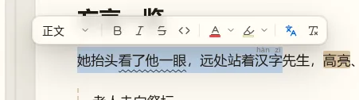
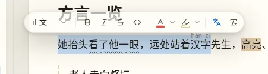
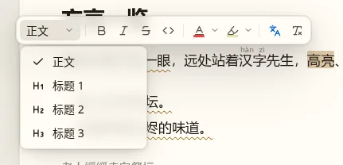
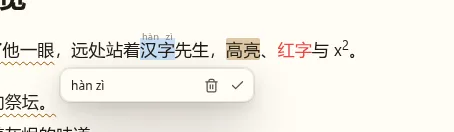
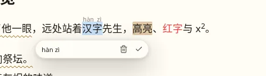
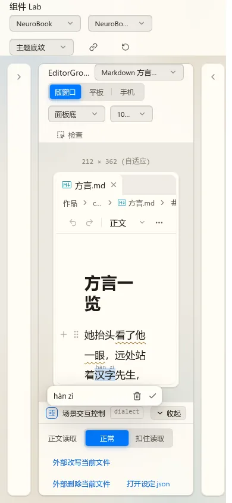
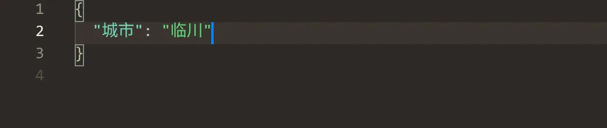

开发服务里的组件 Lab（EditorGroup 的“Markdown 方言”场景），亮色。nbook、macos 两套主题的亮暗四种组合都量过计算样式，没有页面错误与控制台警告；逐项数值记在 Task 的 evidences/ui-check.txt。
最前面是块类型下拉，与工具栏同一个。文字颜色、高亮是拆分按钮：左半边直接用上次的颜色（第一次是红色、黄色，图标下的色条就是这个颜色），右半边的小箭头开色板。选区里有注音时，注音按钮显示按下。



点注音小字，或选中带注音的文字后点注音按钮：卡片贴在下方，预填原来的读音，右边是“移除注音”和“确定”。卡片开着时，原来的选区仍画成选中的颜色。


取证时修了一处：正文的选区原来是浏览器的缺省颜色（系统深蓝），卡片一开就变成主题的浅蓝，看起来像换了状态。现在两者都是主题的选区色，见上面选区菜单那张图。

底色改成稿纸底以后，暗色下当前行与缩进线的对比度变低，但仍看得出，所以维持接受取舍。

| 改底色之前 | 现在 | VS Code 缺省暗色 | |
|---|---|---|---|
| 当前行对底色 | 1.38 | 1.19 | 约 1.13 |
| 缩进线对底色 | 1.92 | 1.65 | 约 1.6 |
一行里有注音时，按 End 光标停在注音后面，到不了行尾。master 上也是这样，不是这次改出来的。